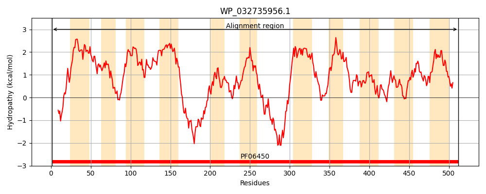
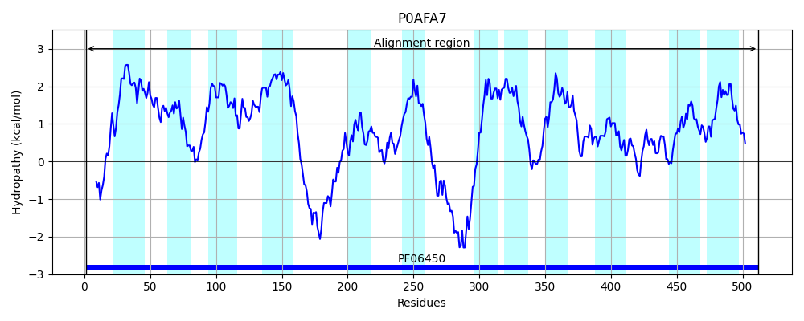
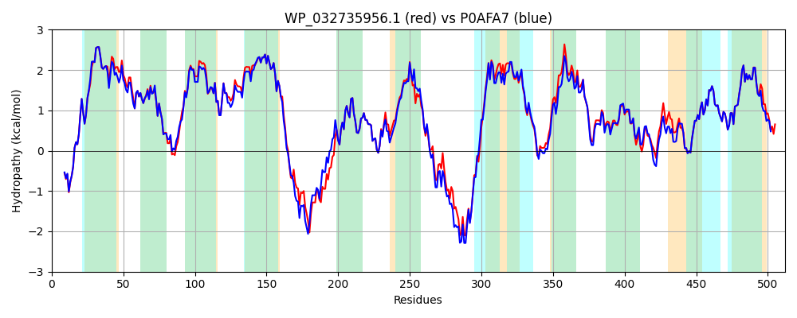

Hit Accession: P0AFA7
Hit TCID: 2.A.34.1.1
Hit Description: gnl|BL_ORD_ID|8810 gnl|TC-DB|P0AFA7|2.A.34.1.1 Na(+)/H(+) antiporter 2 - Escherichia coli.
Mach Len: 512
e:0.000000
Query TMS Count : 11
Hit TMS Count: 12
TMS-Overlap Score: 11.250000
Predicted Substrates:CHEBI:9175;sodium(1+)
BLAST Alignment:
Score: 2259 , Bit scores: 874 bits, E-value: 0.0e+00, Alignment length: 512, Percentage identity: 85
Query: 1 MEISYGRALWRNFLGQSPDWYKLALIIFLIVNPLVFAVAPFVAGWLLVVEFIFTLAMALKCYPLLPGGLLAIEALLIGMTSPTHVRDEIAGNLEVLLLLIFMVAGIYFMKQLLLFVFTRLLLGIRSKMLLSLAFCLAAAFLSAFLDALTVVAVVISVAVGFYGIYHRVASARPDDNDLLDDSHIEQHYREVLEQFRGFLRSLMMHAGVGTALGGVMTMVGEPQNLIIAKAAGWHFGEFFIRMAPVTVPVMVCGLLTCLLVEKYRLFGYGEPLPPTVRKVLQDFDDRSRAQRSRQEQLRLLAQAVIGVWLIVALAFHLAEVGLIGLSVIILATTFSGVTDEHAIGKAFTEALPFTALLTVFFAIVAVIIDQQLFTPVIEFVLQASPHAQLSLFYLFNGLLSSISDNVFVGTVYINEAKTALEHGVISLPQFEMLAVAINTGTNLPSVATPNGQAAFLFLLTSALAPLIRLSYGRMVWMALPYTLVLTLVGLLCVEFTLMPVTNWLLAHGWVTT 512
MEIS+GRALWRNFLGQSPDWYKLALIIFLIVNPL+F ++PFVAGWLLV EFIFTLAMALKCYPLLPGGLLAIEA+ IGMTS HVR+E+A NLEVLLLL+FMVAGIYFMKQLLLF+FTRLLL IRSKMLLSL+FC+AAAFLSAFLDALTVVAVVISVAVGFYGIYHRVAS+R +D DL DDSHI++HY+ VLEQFRGFLRSLMMHAGVGTALGGVMTMVGEPQNLIIAKAAGWHFG+FF+RM+PVTVPV++CGLLTCLLVEK R FGYGE LP VR+VLQ FDD+SR QR+RQ+++RL+ QA+IGVWL+ ALA HLAEVGLIGLSVIILAT+ +GVTDEHAIGKAFTE+LPFTALLTVFF++VAVIIDQQLF+P+I+FVLQAS HAQLSLFY+FNGLLSSISDNVFVGT+YINEAK A+E G I+L Q+E+LAVAINTGTNLPSVATPNGQAAFLFLLTSALAPLIRLSYGRMVWMALPYTLVLTLVGLLCVEFTL PVT W + GW+ T
Sbjct: 1 MEISWGRALWRNFLGQSPDWYKLALIIFLIVNPLIFLISPFVAGWLLVAEFIFTLAMALKCYPLLPGGLLAIEAVFIGMTSAEHVREEVAANLEVLLLLMFMVAGIYFMKQLLLFIFTRLLLSIRSKMLLSLSFCVAAAFLSAFLDALTVVAVVISVAVGFYGIYHRVASSRTEDTDLQDDSHIDKHYKVVLEQFRGFLRSLMMHAGVGTALGGVMTMVGEPQNLIIAKAAGWHFGDFFLRMSPVTVPVLICGLLTCLLVEKLRWFGYGETLPEKVREVLQQFDDQSRHQRTRQDKIRLIVQAIIGVWLVTALALHLAEVGLIGLSVIILATSLTGVTDEHAIGKAFTESLPFTALLTVFFSVVAVIIDQQLFSPIIQFVLQASEHAQLSLFYIFNGLLSSISDNVFVGTIYINEAKAAMESGAITLKQYELLAVAINTGTNLPSVATPNGQAAFLFLLTSALAPLIRLSYGRMVWMALPYTLVLTLVGLLCVEFTLAPVTEWFMQMGWIAT 512 | Protein Hydropathy Plots: |
|---|
|  |  |
Pairwise Alignment-Hydropathy Plot:
|
|---|
|  |